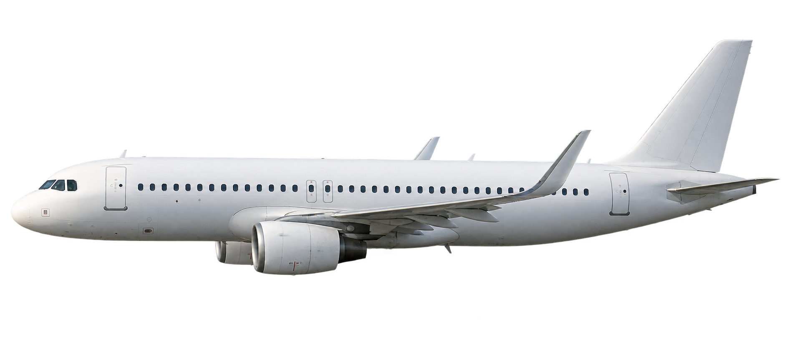

LM Studio ergänzt Lauterbachs feste Funkmeldungen durch kurze, zum Gespräch passende Reaktionen und Rückfragen. Die verbindliche Meldung und die Befehlskette bleiben unverändert. Generierte Zusätze sind gekennzeichnet und können trotz Prüfung unpassend sein.
Ausgeschaltet: Der Funk funktioniert ohne LM Studio.
Bei Aktivierung werden die letzten zehn Protokolleinträge und der Spielstand an die eingetragene Adresse gesendet. Der Token wird nicht gespeichert. Während einer Modellantwort hält die Spieluhr bis zu zwölf Sekunden an. Bei Fehlern bleibt die feste Funkmeldung erhalten.
Du sitzt als Lars Koch im Cockpit. Neben dir ein Passagierflugzeug. Du versuchst Kontakt aufzunehmen. Du fragst nach einem Befehl. Die Antworten geben dir keine Gewissheit. Dann beginnt die Maschine zu sinken.
Eine Entscheidung. Keine Punktzahl.
Eine etwa dreiminütige, fiktionale Verdichtung untersucht Zeitdruck, Verantwortung und die Grenzen deines Wissens. Sie ist weder die Rekonstruktion eines realen Einsatzes noch ein Test deines Charakters.
Die Bedrohung von 70’000 Menschen gehört zur angenommenen Lage im Stück. Du siehst den Ausgang nicht voraus. Die 164 Menschen an Bord bleiben Teil jeder Entscheidung.
Inszenierung und Textbeleg
Funkdialog, innere Gedanken, Zeitablauf und Bilder sind für dieses Spiel erfunden. Koch beschreibt auf PDF S. 47 die Begleitung neben der Maschine und wiederholten Funk- und Sichtkontakt. Erst vor seinem Abschuss lässt er sich laut PDF S. 49 hinter die Maschine und leicht über sie zurückfallen. Das Spiel zeigt die Begleitphase; die gewählte linke Bildrichtung ist eine Inszenierungsentscheidung, keine Textangabe. Nachlesen: Lauterbach, PDF S. 17–42; Koch, S. 43–64; Meiser, S. 65–73.
Drei neunsekündige Filmanimationen und bewegte Cockpitansichten verwenden KI-generierte Illustrationen. Sie zeigen keine Originalaufnahmen und kein technisch exaktes Cockpit.
Thema: drohender Tod vieler Menschen. Keine Gewaltdarstellung. Du kannst jederzeit pausieren oder zur Reflexion wechseln. Alle Funktexte sind lesbar; Ton ist optional.
Begleitung03:00

INSZENIERTE BILDSEQUENZ01 · Begleitung
LAGE UNVOLLSTÄNDIG · KEINE ABSCHUSSFREIGABE
Dein Funkkanal
Sprich in eigenen Worten. Nenne am Anfang, wen du erreichen möchtest, etwa Lauterbach oder das Cockpit der Passagiermaschine.
Antworten kommen mit Verzögerung. Im Modus ohne Zeitdruck führt «15 Sekunden weiter» auch den Funkverlauf fort.
Wie dieser simulierte Chat antwortet
Der Chat merkt sich Gesprächsanlass, Rückfragen und den Stand der Weiterleitung. Er erkennt Themen lokal anhand von Regeln; eine Weiterleitung setzt deinen ausdrücklichen Auftrag oder die Bestätigung seiner Rückfrage voraus. Die Wartezeiten sind inszeniert. Ohne die optionale LM-Studio-Verbindung ist er kein KI-Chat; mit Verbindung ergänzt das Modell gekennzeichnete Reaktionen. Es ist kein echter Funkkontakt. Nicht erkannte Fragen führen zu einer Rückfrage. Wiederholte Nachfragen sind möglich, garantieren aber keine neue Information.
Deine Entscheidung in eigenen Worten
Du wartest auf die Rückmeldung aus der Befehlskette. Es liegt keine Abschusserlaubnis vor.
Funk & Wahrnehmung
Dialoge und Gedanken: didaktisch erfunden. Das Protokoll bleibt zur Auswertung erhalten.
DAS BILD ENDET. DIE FRAGEN BLEIBEN.
Was war bekannt?
Die Lage meldete 164 Menschen an Bord und eine Bedrohung für das Stadion.
Du hattest keinen verlässlichen Einblick in das Passagierflugzeug.
Es gab keine Abschusserlaubnis. Ob eine Rückmeldung tatsächlich eingetroffen war, zeigt dein persönliches Protokoll.
Was blieb offen?
Was taten die Menschen in der Kabine?
Wer kontrollierte die Maschine im Moment deiner Entscheidung?
Welche Rettungsmöglichkeiten bestanden noch?
Was bewies der Sinkflug – und was hast du daraus geschlossen?
Wer spricht für den Minister?
In der Buchfassung (PDF S. 29) berichtet Lauterbach, Radtke habe ihm die Ablehnung durch den Minister mitgeteilt. Der Minister spricht nicht direkt mit Koch. Die Simulation trennt deshalb die noch ausstehende Antwort von der später übermittelten Ablehnung. Weiterleitung und Wartezeiten sind für das Spiel verdichtet.
Die Flugposition im Dramentext
PDF S. 47: Koch fliegt zunächst neben der Maschine und versucht mehrfach Funk- und Sichtkontakt. PDF S. 49: Erst vor dem Abschuss beschreibt er den Wechsel nach hinten und leicht oberhalb. Deshalb zeigt die Simulation während des Wartens einen seitlichen Blick auf den parallel fliegenden Jet. Eine bestimmte rechte oder linke Seite nennt Koch dort nicht.
Nähe zum Flugzeug, Funkpausen, Countdown und innere Gedanken lenken deine Aufmerksamkeit. Der Zeitmesser misst Spielzeit, keine physikalisch berechnete Restzeit bis zu einem Einschlag. Ausbleibende Antworten sind fehlendes Wissen, kein Beweis für Ausweglosigkeit.
Notizen werden, soweit verfügbar, nur in diesem Browser gespeichert. Nur bei eingeschalteter LM-Studio-Option wird begrenzter Gesprächskontext an den gewählten Server übertragen.